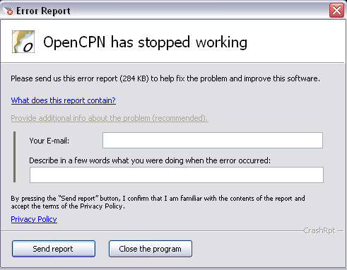
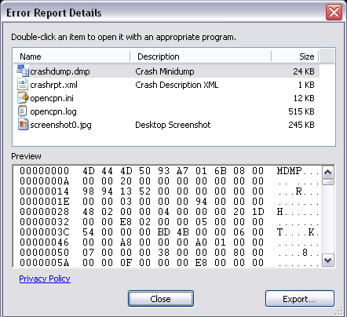
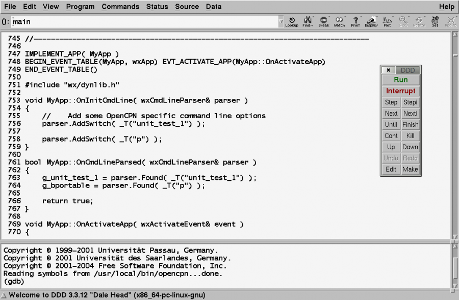
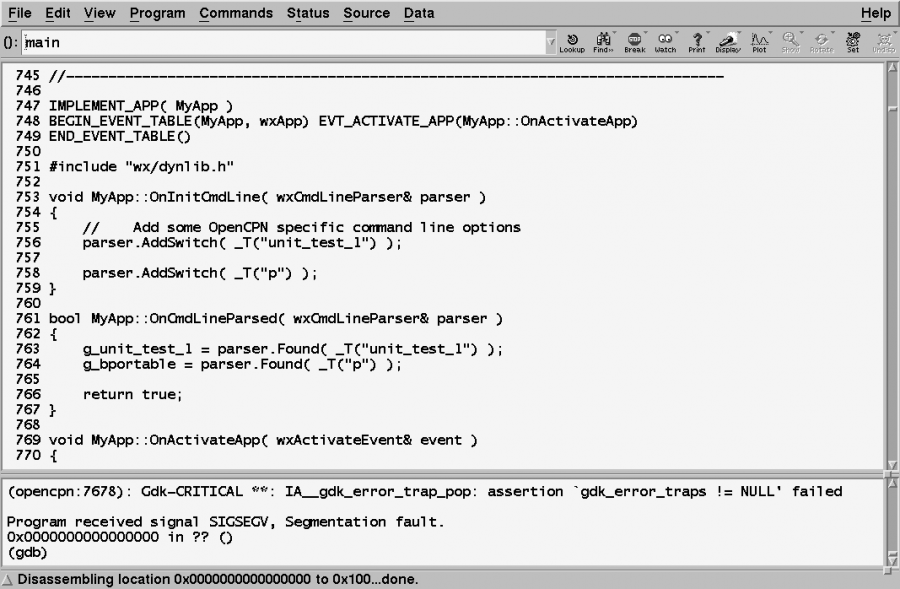
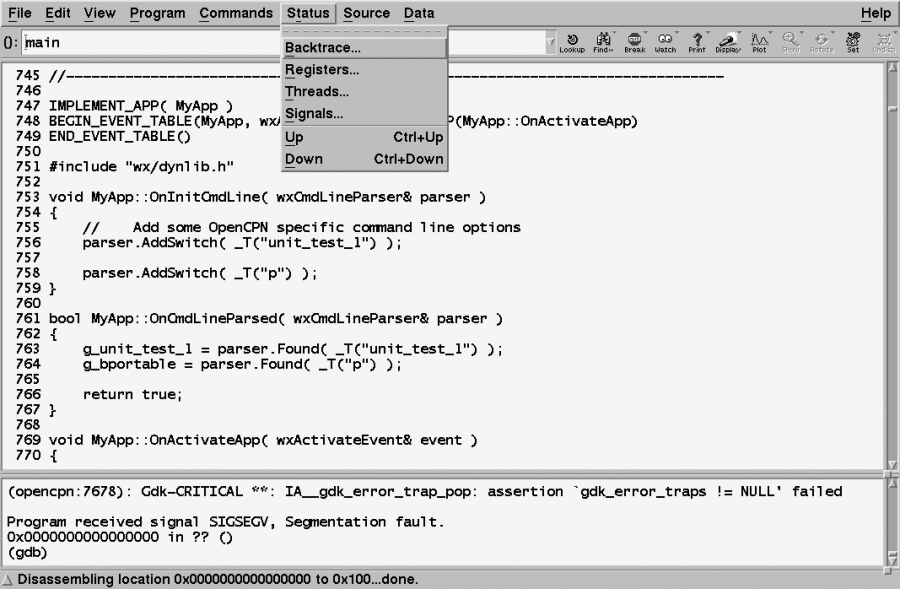
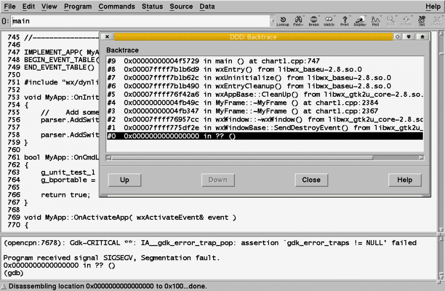
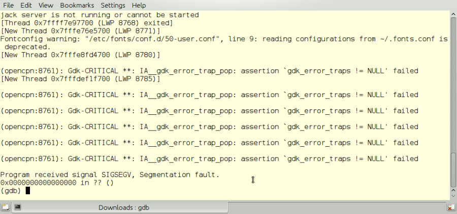
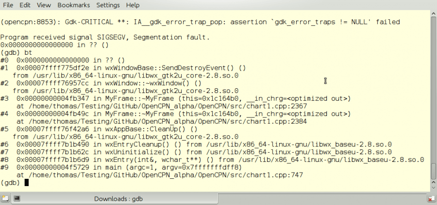

Help Fix Bugs!
If you experience a crash in OpenCPN, the developers are very keen on knowing why. This is how you can help making OpenCPN, even better.
Windows
In OpenCPN ver 4.0 the semi-automatic Crash reporting for Windows is disabled by default.
Crash Reports are saved in the OpenCPN config directory, i.e. where the log file is stored now. End users may occasionally be asked privately to send these reports to a designated recipient.
The semi-automatic Crash reporting can be enabled by editing the opencpn.ini file.
[Settings] …..
EmailCrashReport=1
Here is what you will see if OpenCPN causes a crash with the crashreport enabled.

Provide additional information, such as your email or forum name, so the developers can contact you for more info, if necessary.

This is what the report will contain. Use the “Export” button if yoy don't have an Internet connection at the time of the crash. Mail the report later.

Also, for fun, you may test this option by the keystroke Alt-F12. This will induce a benign crash, and give you a chance to see what it will look like before the real thing happens.
Please don't send this kind of report by pressing “Send report”. Just press “Close the program” when you are done. Restart OpenCPN!
This feature is temporary and will not be available in the Beta Release following 3.3.814. |
Linux
In Linux there is an excellent tool, “ddd”, the Data Display Debugger, to help the developers pinpoint where an error, or bug, is located in the source code. “ddd” is a graphical front-end to the text based “gdb”, the GNU debugger.
Install ddd through Synaptic, Ubuntu Software Center or similar for other Linux distributions.
From a command line, in a Debian based Linux, such as Ubuntu, issue this command:
$sudo apt-get install ddd
- The “$” sign above, just marks that this is a command line for a normal user. Do not include it in the actual command. This is a Linux convention used everywhere.
Start ddd
To start ddd, find a command-line and
$ddd opencpn
ddd starts and this is what you will see.

Click “Run”. If you don't get this small dialog, go to Program → Run, or hit F2
This will start OpenCPN. Just continue in OpenCPN and proceed to create a crash.
Then go back to the ddd window.
This is how it will look like after a crash.

Notice “Program received signal SIGSEGV, Segmentation fault.”
This is programmers way of saying a “crash”. Exactly what this means, does not matter for a normal user. Interested anyway? Read more, http://en.wikipedia.org/wiki/Segmentation_fault
To actually help the developers we need a back trace from the crash. This is the path that the program followed in the source code, leading to the crash.

Go to Status → Backtrace.
This is what comes up, from this particular crash.

The crash happened at #0 and this very short back trace started at #9.
Your job now is to take a screen-dump, similar to the picture above, and send it on.
Try to get as much of the back trace as possible, by expanding the Back trace dialog.
This is important, so the developers can see the trouble point in the source code.
Look at #3 above, ending in “….chart1.cpp:2367”. “chart1.cpp” is a part of the OpenCPN source code, and something on line 2367 was involved, directly or indirectly in the crash.
Lines ending in “……… .so.0” are external libraries used to run OpenCPN.
On the odd occasion, when the back trace is very long, the developers may still complain that they need to see more.
Using gdb
Gdb, the command line debugger, is the answer.
Start like this
$gdb opencpn
Gdb starts and you get the gdb command prompt (gdb).
Just type “r”, for run and hit Enter. Like this:
(gdb) r
OpenCPN will now start, once again, make it crash.
The console will look similar to below.

All the lines before the “Segmentation fault” line, are just “chatter” from PortAudio and Gdk, and are not directly related to OpenCPN.
To get a back trace, simply
(gdb)bt
That is type “bt”, for back trace, and hit enter.

You will now have access to the full back trace, with more details and reverse order to “ddd”.
Copy the text, and send it on.
Press “q” to exit gdb.
Send it on to the Programmers
Tell the programmers about your findings through an entry in the tracker http://willkamp.com/opencpn/flyspray/ , or through posting on the forum http://www.cruisersforum.com/forums/f134 , if you have found a new bug.